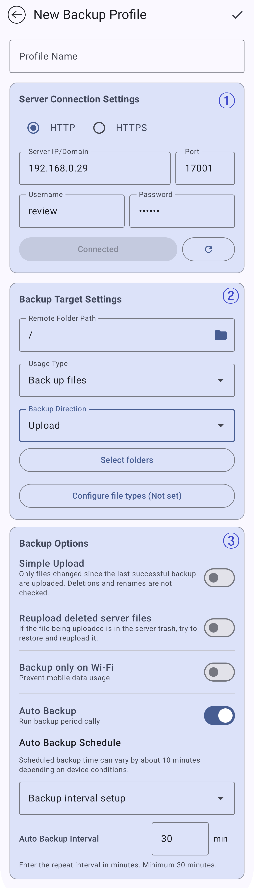

이미지의 번호는 아래 설명과 대응합니다. 설정 화면은 서버 연결, 백업 대상, 백업 옵션으로 나뉩니다.
프로필 이름은 클라이언트 목록에서 여러 백업 설정을 구분할 때 사용합니다. 서버나 백업 용도를 알아보기 쉬운 이름을 지정하세요.
- 뒤로 가기 버튼은 최근 변경 사항을 저장하지 않고 이전 화면으로 돌아갑니다.
- 오른쪽 위 확인 아이콘은 프로필을 저장합니다.
이미지의 표시 1은 서버 연결 영역입니다. 클라이언트가 연결할 서버 주소와 계정 정보를 입력합니다.
- HTTP / HTTPS: 연결 프로토콜을 선택합니다.
- 서버 IP/도메인·포트: 서버 주소를 지정합니다.
- 사용자 이름·비밀번호: 서버에 만들어 둔 계정과 일치해야 합니다.
- 연결됨: 연결 및 승인 확인 결과를 보여줍니다.
- 새로고침: 연결과 승인·기능 정보를 다시 확인합니다.
이미지의 표시 2는 백업할 파일의 위치와 방식을 정하는 영역입니다.
- 원격 폴더 경로: 서버에 저장할 대상 폴더이며 갤러리의 폴더·앨범 묶음에도 사용됩니다.
- 사용 유형: 전체 백업 방식을 정합니다. 예시 화면은 파일 백업입니다.
- 백업 방향: 파일 백업을 고르면 표시됩니다. 예시 화면은 업로드입니다.
- 폴더 선택: 업로드할 로컬 폴더를 고릅니다.
- 파일 형식 설정: 백업할 파일 형식을 정합니다.
이미지의 표시 3은 업로드 방식, 재시도, 네트워크 조건, 자동 백업 주기를 정하는 영역입니다.
- 간단 업로드: 마지막 성공 이후 변경된 파일만 업로드하며 삭제·이름 변경은 확인하지 않습니다.
- 서버에서 삭제된 파일 재업로드: 서버 파일이 휴지통에 있으면 다시 올리도록 시도합니다.
- Wi-Fi에서만 백업: 모바일 데이터를 사용할 때 백업하지 않습니다.
- 자동 백업: 예약 백업을 켜거나 끕니다.
- 자동 백업 일정·간격: 실행 방식을 지정합니다. 예시는 최소 간격으로 표시된 30분입니다.
- 프로필 이름을 입력합니다.
- 서버 연결 정보를 입력하고 연결 결과를 확인합니다.
- 원격 폴더와 사용 유형을 선택합니다.
- 파일 백업이라면 방향, 로컬 폴더, 파일 형식을 확인합니다.
- 간단 업로드, Wi-Fi 조건, 자동 백업을 설정합니다.
보이는 항목은 서버 계정의 권한과 선택한 사용 유형에 따라 달라집니다.
- 사용 유형 목록에는 서버 사용자가 허용받은 항목만 보일 수 있습니다.
- 백업 방향, 폴더 선택, 파일 형식 설정은 선택한 방식에 따라 표시됩니다.
- 자동 백업은 간격·매일·매주·매월 중 선택한 방식에 따라 항목이 달라집니다.
- 일부 방식에서는 간단 업로드 등 옵션이 자동으로 지정됩니다.
권장 사항
서버 연결을 확인하고 백업 대상 설정을 검토한 뒤 프로필을 저장하세요. 프로필이 여러 개일 때 사용자, 폴더, 백업 규칙을 혼동하지 않는 데 도움이 됩니다.